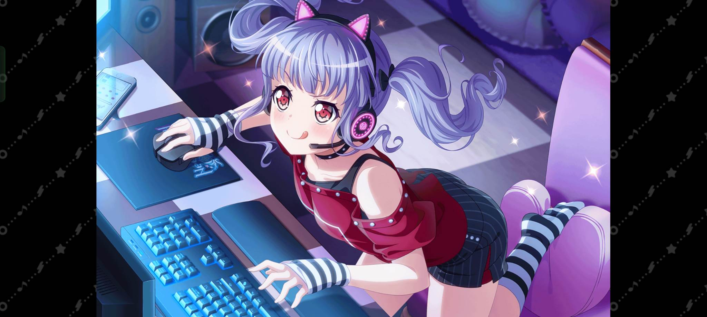

Jak wszyscy dobrze wiemy Ako jest najwspanialszym co Bandori ma do zaoferowania, dlaczego porusza każdego z nas? Dzięki swej wybitnej pozytywności czyni każdą chwilę lepszą, wprowadza wybitne komediowe momenty swoją pasją do wszystkiego co jest cool, inspiruje swoim oddaniem zespołowi i porusza tym jak stara się stawać coraz lepszą. Jest urocza. Ponieważ to bardzo ważne powtórzę - Ako jest urocza. uwzględniając te wszystkie istotne cechy Ako możemy dostrzec dlaczego jest najlepszą perkusistką świata i okolic. Zainstaluj grę!
